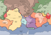

lithosphere

Definition: A lithosphere (from Ancient Greek λίθος (líthos) 'rocky', and σφαίρα (sphaíra) 'sphere') is the rigid, outermost rocky shell of a terrestrial planet or natural satellite. On Earth, it is composed of the crust and the portion of the upper mantle that behaves elastically on time scales of up to thousands of years or more. The crust and upper mantle are distinguished on the basis of chemistry and mineralogy.
Source: Wikipedia
Wikipedia Page
Wikidata Page
Occurs in: